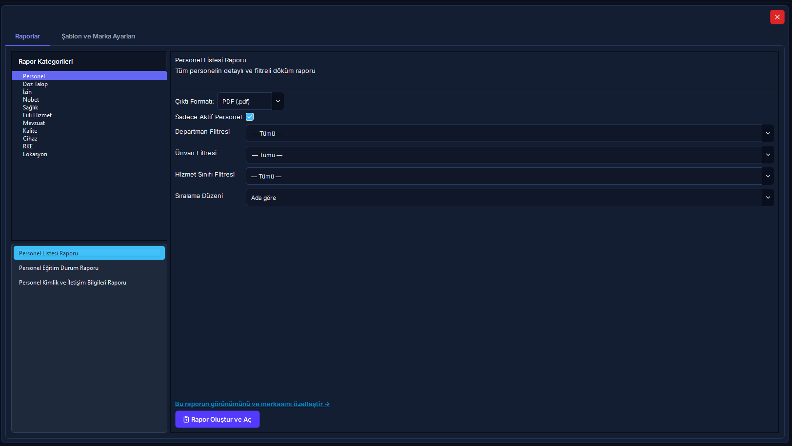
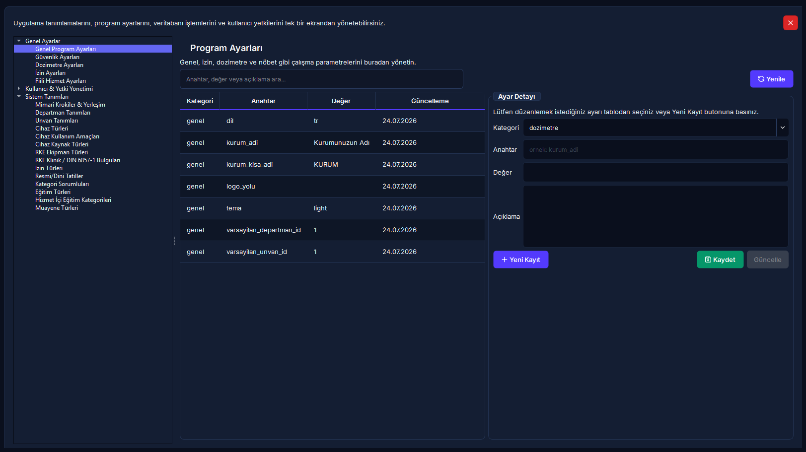
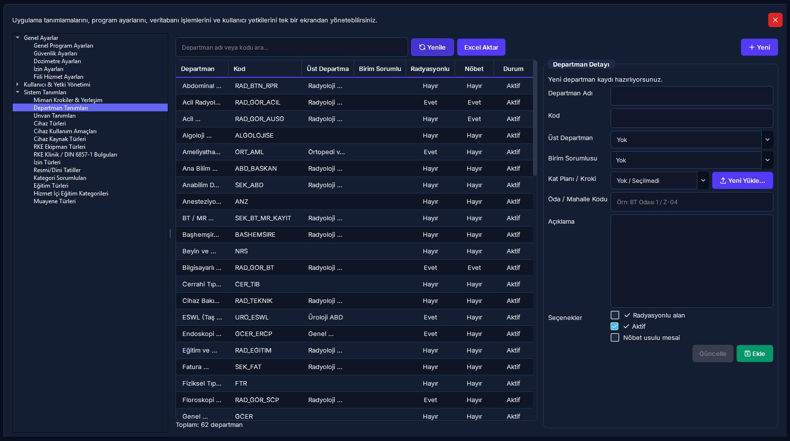

Sistem Ayarları, Şablon Merkezi & Tanımlamalar
Kurum çift başlık ve çift logo antet yapılandırması, Word ve Excel rapor şablonlarının yönetimi, hastane departman hiyerarşisi, kadro unvanları ve resmi tatil takviminin merkezi operasyonel yönetim rehberi.
Hızlı Reçete: Kurumsal Antet ve Çift Logo Tanımlama
Tüm Word ve Excel raporlarında resmi kurum başlıkları ve logolarının otomatik basılması.
[Rapor Şablonları] ekranında [Kurum Başlık 1] ve [Kurum Başlık 2] metinlerini girip, [Gözat...] butonlarıyla sol/sağ logoları seçin.
Logolar güvenli kaynak kasasına kopyalanır; canlı önizleme güncellenir ve şablonlardaki yer tutuculara otomatik işlenir.
Kritik Sahada Yanlış Bilinen Kurallar (Mit Avcısı)
5N1K Kural ve Ayar Çözümleme Tablosu
Departman Yönetimi & Güvenlik Kalkanı Süreci
Ekran Rehberi ve Kritik Arayüzler



Adım Adım Operasyonel Eylem Akışı
1 Kurum Başlıklarını ve Resmi Çift Logoyu Yapılandırma
- Sol gezinim menüsünden [Sistem Ayarları] > [Rapor Şablonları & Kurum Anteti] sekmesini açın.
- [Kurum Başlık 1] alanına üst idari kurum adını (Örn: T.C. SAĞLIK BAKANLIĞI), [Kurum Başlık 2] alanına hastane/fakülte adınızı yazın.
- Başlıkların raporda görünmesi için sollarındaki [Kurum Başlık 1] ve [Kurum Başlık 2] kutularını işaretleyin.
- [Kurum Logo 1] ve [Kurum Logo 2] yanındaki [Gözat...] butonlarına tıklayarak bilgisayarınızdaki logo dosyalarını seçin.
- Sağ paneldeki Canlı Önizleme alanında logoların ve başlıkların tam konumunu denetleyin.
- Alt kısımdaki [Kaydet] butonuna basın. Başarı bildiriminden sonra üretilen tüm resmi raporlar bu anteti kullanır.
2 Yeni Departman Tanımlama ve Mimari Kat Planı Eşleme
- Sistem Yönetimi ağacından [Sistem Tanımları] > [Departman Tanımları] sayfasına geçin.
- Araç çubuğundaki [Yeni] butonuna tıklayın.
- [Departman Adı] alanını doldurun ve [Kod] kutusuna standart formatta (2-20 karakter, büyük harf) bir kod belirleyin (Örn: RAD_MR).
- Eğer bir alt ünite ise [Üst Departman] açılır kutusundan bağlı olduğu ana anabilim dalını seçin.
- [Birim Sorumlusu] kutusundan ilgili yetkili hekimi veya amiri atayın.
- Birim radyasyon içeriyorsa [Radyasyonlu alan] kutusunu, vardiyalı çalışıyorsa [Nöbet usulü mesai] kutusunu işaretleyin.
- [Kat Planı / Kroki] açılır kutusundan ilgili katı seçin veya [Yeni Yükle...] butonuyla doğrudan PDF/PNG kat planı yükleyin.
- [Ekle] butonuna basarak işlemi tamamlayın.
3 Resmi/Dini Tatil Takvimini Otomatik Oluşturma ve Düzenleme
- Ağaç menüsünden [Tanımlamalar] > [Tatil Takvimi] sayfasına tıklayın.
- Sabit Resmi Tatilleri Topluca Eklemek İçin: Araç çubuğundaki [Resmi Tatilleri Ekle] butonuna tıklayın, ilgili yılı girin; 1 Ocak, 23 Nisan, 1 Mayıs, 19 Mayıs, 15 Temmuz, 30 Ağustos ve 28-29 Ekim (8 resmi tatil) tek tıkla takvime işlenir.
- Dini Bayramları Tek Tıkla Eklemek İçin: [Yeni] butonuna basın, Tatil Adı alanından Ramazan Bayramı veya Kurban Bayramı seçin. Sistem otomatik olarak Dini Tatil türünü ve Tüm bayram günlerini otomatik oluştur seçeneğini aktif eder.
- Tarih alanına bayramın Arife Günü tarihini girin ve [Kaydet] butonuna basın. Sistem Arife (0.5 gün) ile birlikte bayramın tüm günlerini (Ramazan için 4 gün, Kurban için 5 gün) tek seferde takvime kaydeder.
- İdari İzin veya Özel Tatil İçin: [Yeni] butonuna basarak tekil tarih, tatil adı, tür ve gün sayısı (0.5 veya 1.0) belirleyip kaydedebilirsiniz.
4 Kurumsal E-Posta (SMTP) ve Web Portal 2FA Doğrulama Ayarlarını Yapılandırma
- Sol gezinim ağacından [Sistem Ayarları] > [E-Posta ve Bildirim Ayarları] sekmesini açın.
- [Gönderici E-Posta Adresi] kutusuna kurumunuzun veya biriminizin e-posta adresini yazın; sistem sağlayıcıyı (Gmail, Outlook/Office 365, Yandex, Kurumsal/Sağlık Bakanlığı) otomatik olarak algılar ve sunucu/port ayarlarını kendisi doldurur.
- Gmail veya Outlook kullanıyorsanız [Uygulama Şifresi Nasıl Alınır?] butonuna tıklayarak 3 adımlı görsel rehber eşliğinde oluşturduğunuz 16 haneli uygulama şifresini, kurumsal posta kullanıyorsanız e-posta parolanızı girin.
- Web Portal girişlerinde personele 6 haneli tek kullanımlık doğrulama kodu gönderilmesini istiyorsanız [Web Portal girişinde E-Posta ile 6 Haneli Doğrulama Kodu (2FA OTP) iste] kutusunu işaretleyin.
- [Test E-Postası Gönder] butonuna basarak bağlantıyı canlı olarak doğrulayın ve ardından [Ayarları Kaydet] butonuna tıklayın.
Sıkça Sorulan Sorular (SSS)
Fiili hizmet (FHZ) hesaplama yöntemini yıl ortasında değiştirebilir miyiz?
Fiili hizmet hesaplama yöntemi (Hibrit, Manuel veya Nöbet) değiştirildiğinde geçmiş dönemlerde kapatılmış ve SGK'ya bildirilmiş olan yıpranma payı puantajlarının tutarlılığı etkilenebilir. Sistem bu sebeple değişiklik anında ekrana Kritik Ayar Değişikliği ikazı getirir. Bu ayarın takvim yılı veya mali dönem başında planlı olarak değiştirilmesi önemle tavsiye edilir.
Kapatılmak istenen bir departmanı pasife alırken sistem neden hata veriyor?
RADPYS veri bütünlüğü kuralı gereğince; içerisinde en az 1 aktif personel kaydı veya kendisine bağlı aktif alt departman bulunan birimler pasife alınamaz. Bu durumda sistem "Bu departman pasife alinamaz: X personel kaydi... Once bagimliliklari kaldirin." uyarısı verir. İşlemi yapabilmek için öncelikle o departmandaki personelleri [Personel Listesi] ekranından başka bir aktif birime transfer etmeniz gerekir.
Cihaz Türü, Cihaz Amacı veya Kaynak Türü gibi bir tanımı sildiğimde geçmiş cihazlar ve envanterler bozulur mu?
Dini bayramları her yıl tek tek gün gün girmek zorunda mıyız, arefe günü neden 0.5 gündür?
Mevzuata göre dini bayram arefeleri saat 13:00 itibarıyla resmi tatil sayılmaktadır. Nöbet dağıtım motoru ve fazla mesai hesaplayıcısı, personelin sabah çalıştığı mesaiyi normal, öğleden sonrasını ise resmi tatil nöbet katsayısıyla hesaplar. Arife günü için gün sayısı otomatik olarak
0.5 gün girilerek bu yarım günlük ayrım kusursuz şekilde puantaja yansıtılır.
"Yeniden Oluştur" butonuna bastığımda Word veya Excel'deki özel tasarımlarım kaybolur mu?
Evet. [Yeniden Oluştur] butonu, ilgili Word veya Excel şablonunu doğrudan kurulum anındaki fabrika standartlarına döndürür. Şablon üzerinde daha önce yapmış olduğunuz tablo ve sütun düzenlemelerini kaybetmemek için butona basmadan önce [Klasörü Aç] butonuyla data/templates/ klasörünün bir yedeğini almanızı önemle öneririz.
Tanımlama tablolarındaki uzun birim veya unvan adları ekranda dar göründüğünde ne yapmalıyım?
Tablonun sütun başlıkları arasındaki ayırıcı çizgiyi fareyle tutup sağa sola dilediğiniz genişliğe çekebilirsiniz. Tablo otomatik olarak yatay kaydırma çubuğu sunar ve hiçbir veri üç nokta (...) şeklinde kesilmeden tam olarak okunabilir.